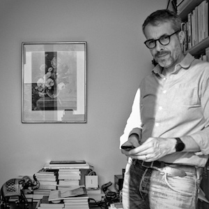

<main class="uk-section uk-section-default">
<div class="uk-container">

<h2 id="index-keynote">Keynote</h2>
<article class="keynote">
<header class="keynote-header">
<div class="keynote-speaker-image">

</div>
<div class="keynote-meta">
<div class="keynote-title">More than Gender-Bias: Understanding the Sociological Imagination of Large Language Models</div>
<div class="keynote-speaker"><a href="https://gillesbastin.github.io/" target="_blank">Gilles Bastin</a></div>
<div class="keynote-affiliation">Université Grenoble Alpes</div>
</div>
</header>
<div class="keynote-body">
<p>
With the groundbreaking launch of OpenAI’s ChatGPT in November 2022, swiftly followed by powerful counterparts such as Microsoft’s Copilot and Google’s Gemini in 2023, one of the most sophisticated algorithmic infrastructures ever developed in academic computer science research — large language models (LLMs) — was unveiled to the general public. Since then the chatbot has captivated a vast community of new users, drawn by its remarkable ability to produce accurate, coherent and flawless texts in response to their prompts. Hailed by AI enthusiasts and tech visionaries as a monumental leap toward automating the production of complex cultural artifacts like novels, news articles, speeches, letters, and songs, ChatGPT has simultaneously sparked fierce debates on critical issues including copyright, knowledge integrity, labor displacement, and misinformation.
Some recent studies have highlighted possible biases that could raise doubts about the neutrality of the chatbot and question its ability to fairly represent the social world. However, current limitations in bias research include an almost exclusive focus on predefined protected attributes like gender or race, or on political leaning.
</p>
<p>
In this talk, I will propose an alternative approach to this question that shifts the focus from describing the biases of ChatGPT to exposing the underlying social world's representation of the chatbot. For that purpose, I will advocate that we need to better understand the bot’s "sociological imagination"—its ability to identify consistent social structures behind repeated accounts of personal lives. I will also provide evidence that GPT’s sociological imagination is very narrow. While ChatGPT can recognise and represent numerous social structures from its training data (e.g., gender inequalities, reproduction of social position across generations...), it does not adequately represents the diversity of positions in the social space. In particular, its responses disproportionately favor senior executives and professionals.
This result raises concerns about the chatbot's neutrality and its ability to represent the social world fairly when used for generating texts or social sorting in cultural or academic contexts.
</p>
<footer>
<div class="keynote-bio expanded" id="keynote-bio-1">
<p>
Gilles Bastin is Professor of Sociology at the School of Political Studies, Université Grenoble Alpes. His research focuses on the sociology of culture and the media, sociological theory and the history of the social sciences, as well as the methodological, political and ethical aspects of data use in the social sciences.
</p>
</div>
</footer>
</div>
</article>


<h2 id="index-program">Program</h2>
<p>Touché is part of the <a href="https://clef2024.clef-initiative.eu/index.php?page=Pages/programme.html">CLEF 2024 conference program</a>. All session times below are given in <a href="https://time.is/Grenoble">Grenoble local time (CEST)</a>. Touché is also featured in the CLEF Lab Overviews session September 9, 11:10-12:40, Room 1. Poster sessions are September 9 to 11, 15:30-16:30.</p>

<table class="uk-table uk-table-divider uk-table-small uk-table-striped">
<tbody>
<tr><td colspan="2"><b>Monday, September 9, Room 2</b></td></tr>
<tr><td><b>14:00-15:00</b></td><td><b>Keynote</b><br><i>Gilles Bastin</i></td></tr>
<tr><td colspan="2"></td></tr>
<tr><td><b>15:00-15:30</b></td><td><b>Task Session: Image Retrieval/Generation for Arguments</b><br><i>Maximilian Heinrich</i></td></tr>
<tr>   <td>15:10-15:30</td>    <td>Participant Presentations</td></tr>
<tr><td colspan="2"></td></tr>
<tr><td><b>15:30-16:30</b></td><td><b>Poster Session + Coffee break</b></td></tr>
<tr><td colspan="2"></td></tr>
<tr><td><b>16:30-17:10</b></td><td><b>Task Session: Ideology and Power Identification in Parliamentary Debates</b><br><i>Çağrı Çöltekin</i></td></tr>
<tr>   <td>16:40-17:10</td>    <td>Participant Presentations</td></tr>
<tr><td colspan="2"></td></tr>
<tr><td><b>17:10-17:50</b></td><td><b>Task Session: Human Value Detection (ValueEval)</b><br><i>Johannes Kiesel</i></td></tr>
<tr>   <td>17:18-17:26</td>    <td>Hierocles of Alexandria at Touché: Multi-task &amp; Multi-head Custom Architecture with Transformer-based Models for Human Value Detection<br><i>Sotirios Legkas, Christina Christodoulou, Matthaios Zidianakis, Dimitrios Koutrintzes, Maria Dagioglou, Georgios Petasis</i></td></tr>
<tr>   <td>17:26-17:34</td>    <td>Eric Fromm at Touché: Prompts vs FineTuning for Human Value Detection<br><i>Ranjan Mishra, Meike Morren</i></td></tr>
<tr>   <td>17:34-17:42</td>    <td>Arthur Schopenhauer at Touché 2024: Multi-Lingual Text Classification Using Ensembles of Large Language Models<br><i>Hamza Yunis (online)</i></td></tr>
<tr>   <td>17:42-17:50</td>    <td>SCaLAR NITK at Touché: Comparative Analysis of Machine Learning Models for Human Value Identification<br><i>Praveen K, Darshan R K, Chinta Tejdeep Reddy, Anand Kumar M (online)</i></td></tr>
<tr><td colspan="2"></td></tr>
<tr><td><b>17:50-18:00</b></td><td><b>Closing</b><br><i>Johannes Kiesel</i></td></tr>
</tbody>
</table>
</div>
</main>
